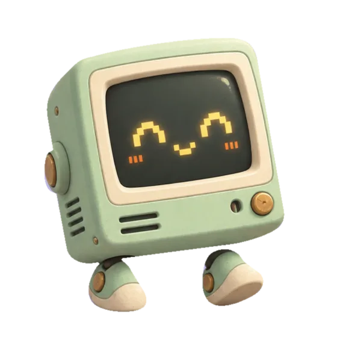
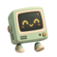
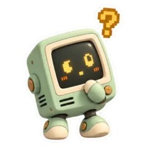
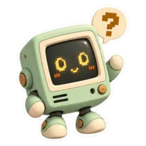
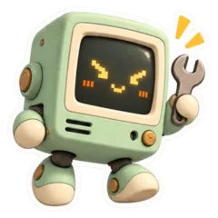
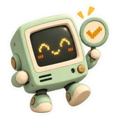
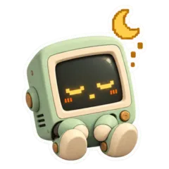

It reads everything.
It only bothers you when it matters.
The Machine reads your email, calendar, chats and phone notifications, finds the few things that actually need you, and sends them to Telegram as short cards. Tap Do it and your own agent carries the task out.

Try it: tap Do it

The MachineDemo · nothing is sentAlex asked about the annual plan on Tuesday and hasn’t had a reply. Their trial ends Friday. I can draft a short answer with the numbers.
A colleague who reads the firehose for you
A small service collects your signals into one private database. Your OpenClaw agent reviews them in the background and only speaks up when something is worth your time.

Reads, never writes
Incremental, read-only collectors for each account. Everything lands in one SQLite file with full-text search.

Finds what needs you
It checks whether something is already handled, really yours, and worth it before it says anything. Saying nothing is normal.

Does the actual work
Drafts the reply, makes the fix, does the research. When it’s sure, it starts before you ask: you only confirm the Send, Submit, Pay or Book.

Gets better with you
Your dismissals, edits and notes steer what comes next. Tell it something once and it remembers. It even fixes its own bugs, with Undo for a day.
The things that fall through the cracks
Not another notification feed. Each card says what matters and what it can do next, in two or three sentences.
Everywhere work happens
Each account has its own boundary, so work and personal never mix. A new source is one small Python file.
Your data stays on your machine
The service has no model of its own. All reading and thinking happens in the OpenClaw agent you already run, with the model provider you chose. Local models work too.
- One private database. Plain SQLite in your home directory. No cloud, no account, no telemetry.
- People and projects, kept local. Who you deal with, who has gone quiet and which projects are heating up, worked out on your own machine.
- Related by meaning, locally. An optional small model on your machine finds related messages and searches everything at once.
- Nothing goes out without you. Every email and message is sent only after you approve that exact draft, and never twice.
- Do it means exactly that. Tapping Do it approves what the card offered, and nothing beyond it.
- Dashboard on your tailnet. It only serves your own Tailscale identity. There’s no public endpoint.
- Quiet when you are. Quiet hours at night, work waits for Monday, and one morning digest for everything that can wait. Phone status notices and routine calendar blocks never get that far.
Try it on last week first
See what it would have done before it does anything.
- Connect. The installer finds your accounts and keys, and tests each source.
- Your voice. It learns how you write from your sent messages. You check it first.
- Preview. Your agent reviews the last 7 days and shows the cards it would have sent.
- Turn it on. Until then, nothing is sent or done in your accounts.
Linux with systemd · Python 3.12+ · Node.js 24 or 26 · OpenClaw 2026.10.2+ with its Telegram channel · Tailscale for the dashboard.
# install, connect your sources, preview, turn on git clone https://github.com/JeroenCorthout/TheMachine.git \ ~/.openclaw/workspace/tools/personal-assistant cd ~/.openclaw/workspace/tools/personal-assistant ./install.sh # add a source, or a second account, later assistant connect slack # something off? every problem comes with its fix assistant doctorGetting started, step by step

Let it read. You get on with your day.
Early release, for people who already run OpenClaw. Feedback and connectors are very welcome.